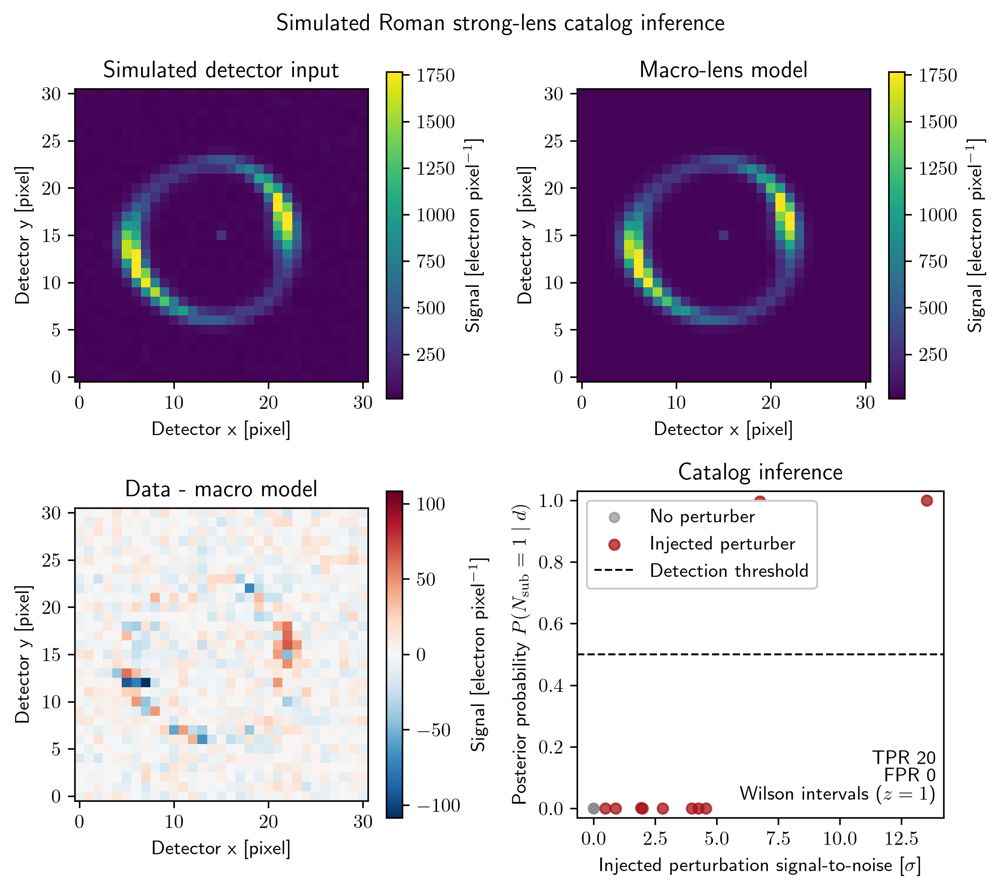
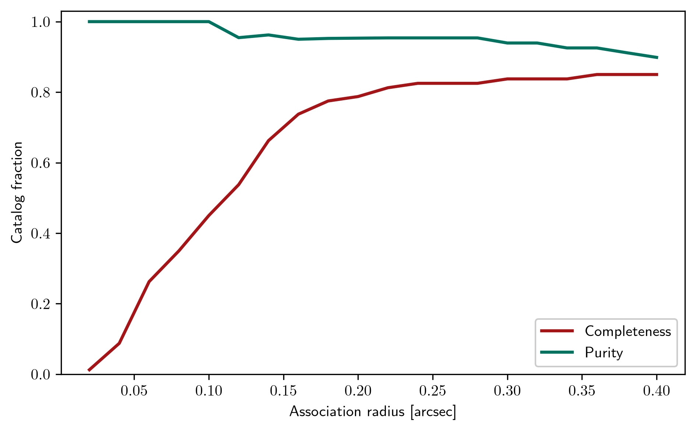

Examples
Every Python example under examples/ has a corresponding Jupyter notebook
in the same directory. Open the notebook in VS Code or Jupyter to run it
interactively. The Python scripts remain available for automated and command-line
runs. The batch-command notebook lists its external commands without executing
them.
Pipeline demonstrations
chandra_point_source_catalogCompact Chandra-style point-source detection with simulated data.
gaussian_mixture_catalogTwo-dimensional variable-width Gaussian-mixture inference with genuine birth and death transitions.
unbinned_gaussian_mixturePCAT fits the coordinates of 140 individually simulated events directly, without spatial count bins. Its notebook runs the sampler, reads the saved center posterior, and displays the generated event-catalog frames.
transit_timing_variationsPCAT fits a sinusoidal timing perturbation to 24 individually simulated mid-transit times. Its notebook reads the timing posterior and displays the sampled model against the simulated timing residuals.
simulated_hst_strong_lensHubble Space Telescope Wide Field Camera 3 image inference with lens mass, foreground lens-galaxy emission, source emission, and lensed emission.
python examples/simulated_hst_strong_lens/simulated_hst_strong_lens.pysimulated_rubin_cluster_lensSimulated Rubin-like cluster-scale lens with a Gaussian point-spread function. The notebook samples the Einstein radius and source position with PCAT’s Poisson image likelihood, then shows the fitted image, residuals, and posterior parameter distributions. It does not analyze Rubin observations.
rubin_dp1_confirmed_strong_lensesRubin Science Platform notebook for real Data Preview 1 imaging. It queries confirmed SIMBAD lens-system classifications, checks exact DP1 image footprints, retrieves every resulting deep-coadd cutout, displays the full matched sample, and passes each usable cutout to PCAT. DP1 requires Rubin data rights, and SIMBAD does not constitute a complete census of lenses.
Run the maintained local smoke suite with:
python examples/run_all_examples.py
The suite runs the compact image and publication-inspired simulations, the stellar-flare and Voigt smoke configurations, an unbinned Gaussian mixture, simulated Roman strong-lens posterior images, simulated radial-velocity and transit-timing series, the public JWST/MIRI spectrum, the proposal profiler, and the sampler comparison. The JWST example may retrieve public MAST data. Notebooks requiring authenticated services or interactive inspection are excluded.
Eight changing inference views and the central PCAT logo are synchronized below. The panels show a genuinely unbinned Gaussian mixture, point sources in a simulated Daylan et al. (2017) Fermi-LAT northern Galactic cap, transdimensional Voigt-line fitting, a variable catalog of rotating starspots, simulated Roman/WFI lensed arcs, stellar flares, radial velocities, and transit times. The time-series and histogram axes remain fixed; the GIF uses one shared color palette.

Publication and instrument examples
daylan+2017_fermi_point_sourcesScaled mock-catalog reproduction of Daylan, Portillo, and Finkbeiner (2017). The smoke mode preserves the inference pattern while reducing the source count and chain length.
python 'examples/daylan+2017_fermi_point_sources/daylan+2017_fermi_point_sources.py' --smoke --fresh
daylan+2018_strong_lens_subhalosSimulated Hubble Space Telescope Wide Field Camera 3 strong-lens analysis comparing a variable subhalo catalog with a fixed one-subhalo fit.
python 'examples/daylan+2018_strong_lens_subhalos/daylan+2018_strong_lens_subhalos.py' --smoke python 'examples/daylan+2018_strong_lens_subhalos/daylan+2018_strong_lens_subhalos.py' --smoke --one-subhalo
voigt_spectral_line_catalogTransdimensional detection of an unknown number of Voigt-profile emission lines in simulated spectral data.
python examples/voigt_spectral_line_catalog/voigt_spectral_line_catalog.py --configuration nomi
jwst_miri_ngc7027_line_catalogTransdimensional Voigt-line catalog for the public James Webb Space Telescope (JWST) MIRI Medium Resolution Spectrometer spectrum of NGC 7027 from program 1523. The script downloads the level-3 spectrum from the Mikulski Archive for Space Telescopes when it is absent, maps the measured flux and uncertainty to effective Poisson counts, and fits a line catalog over 5.30–5.535 microns.
python examples/jwst_miri_ngc7027_line_catalog/jwst_miri_ngc7027_line_catalog.py --numbswep 200000
variable_number_exoplanets_radial_velocitySimulated six-year, two-instrument radial-velocity series containing three injected planets. PCAT samples a variable catalog of Keplerian signals while marginalizing instrument offsets and stellar jitter. The default 100,000 sweeps are intended for the full demonstration;
--smokeprovides a short pipeline check.python examples/variable_number_exoplanets_radial_velocity/variable_number_exoplanets_radial_velocity.py --smoke
variable_number_stellar_flaresSimulated one-day, TESS-like light curve with fast-rise, exponential-decay flares. PCAT fits a variable catalog of native FRED bursts with independent peak amplitude, peak time, rise time, and decay time.
python examples/variable_number_stellar_flares/variable_number_stellar_flares.py --smoke
variable_number_stellar_spotsSimulated rotating-star photometry with three injected dark spots. PCAT fits a zero-to-five-spot catalog using a fixed 3.2-day rotation period while sampling each spot’s phase, depth, and width.
python examples/variable_number_stellar_spots/variable_number_stellar_spots.py --smoke
roman_strong_lens_perturber_catalogSeeded Roman strong-lens population benchmark and catalog-detection diagnostic.
python examples/roman_strong_lens_perturber_catalog/roman_strong_lens_perturber_catalog.py
The four panels trace one simulated detector image through the macro-lens model and residual, then summarize catalog posterior probabilities across the seeded lens population.
fermi_lat_pg1553_event_filterFermi Large Area Telescope event-filter configuration for PG 1553+113. This utility requires the Fermi Science Tools and local mission data.
portillo+2017_crowded_sdss_m2Simulated Sloan Digital Sky Survey crowded-field deblending patterned after Portillo et al. (2017).
feder+2020_multiband_sdss_deblendingSimulated multiband Sloan Digital Sky Survey deblending patterned after Feder et al. (2020).
butler+2022_spire_sz_component_separationSimulated Herschel SPIRE point-source and Sunyaev-Zeldovich component separation patterned after Butler et al. (2022).
feder+2023_point_diffuse_spireSimulated joint point-source and diffuse-emission inference patterned after Feder et al. (2023).
hall+2026_herschel_dsfg_multiplicitySimulated Herschel dusty star-forming galaxy multiplicity inference patterned after Hall et al. (2026).

Analysis utilities
sampler_comparison_emcee_dynestyControlled simulated radial-velocity comparison of PCAT, emcee, and dynesty. The fixed-dimensional comparison uses the same likelihood and priors for all samplers. The variable-dimensional comparison contrasts one PCAT catalog run with separate dynesty evidence calculations for each planet count; emcee is excluded from that portion because it does not compare dimensions.
python examples/sampler_comparison_emcee_dynesty/sampler_comparison_emcee_dynesty.py --part fixed
proposal_profilingSimulated Voigt-line run reporting proposal attempts, acceptance fractions, time per sweep, and the recorded timing breakdown for major pipeline phases.
python examples/proposal_profiling/proposal_profiling.py --numbswep 20000
proposal_state_animationShort simulated Voigt-line run producing two complementary animations. The retained-state sequence follows the configured plotting cadence, while the candidate sequence shows every attempted move before acceptance or rejection.
python examples/proposal_state_animation/proposal_state_animation.py --numbswep 24
burn_in_strategiesSeeded comparison of fixed proposal scales, adaptive proposal scales, and likelihood-tempered plus adaptive burn-in on correlated-Gaussian and equal-weight bimodal posterior targets. The figures report retained samples, acceptance, effective sample rate, target-summary error, runtime, and the recorded inverse-temperature schedule.
python examples/burn_in_strategies/burn_in_strategies.py --numbswep 1200
population_gridSeeded simulated populations used to demonstrate PCAT’s marginal and pairwise posterior plotting. These arrays are illustrative rather than observations.
legacy_external_analysis_commandsCommand-reference notebook for external analyses. It records commands but does not execute them.
catalog_association_completeness_puritySeeded completeness and purity calculation for coordinate-and-value catalog matching across a range of association radii.
python examples/catalog_association_completeness_purity/catalog_association_completeness_purity.py

Scientific interpretation
Generated examples are deterministic pipeline demonstrations unless their README explicitly states otherwise. Synthetic outputs validate computation and visualization but do not constitute measurements of real astrophysical systems. The daylan+2017_fermi_point_sources README distinguishes its scaled simulation from the archival Fermi-LAT analysis in the publication.